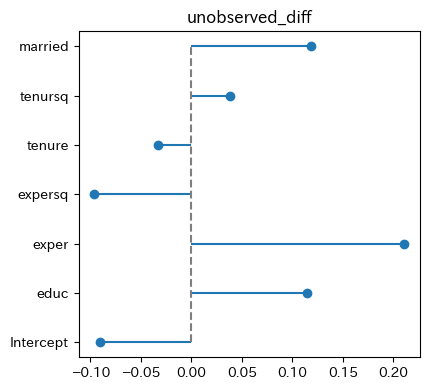

Blinder_Oaxaca, plot_Blinder_Oaxaca
概要
2つのサブサンプルを用いた回帰分析の推定結果に対して、Blinder-Oaxaca分解を行います。
Blinder_Oaxaca(model1, model2)
plot_Blinder_Oaxaca(
model1, model2,
diff_type = ['observed_diff', 'unobserved_diff'],
ax = None,
)いま、ある変数 \(s\) を用いて \(s = m\) と \(s = f\) の2つのサブグループからなるデータセットがあるとし、次のような回帰式を仮定します。
\[ \begin{aligned} Y_{i}^s = \boldsymbol{X}_i^s\boldsymbol{\beta}^s + \epsilon_i^s, && s = m, f \end{aligned} \tag{1} \]
ここで、\(\boldsymbol{X}_i^s\) サブグループ \(s\) に属する個人 \(i\) についての説明変数からなる行列で、\(\boldsymbol{\beta}^s\) はサブグループ \(s\) のについての回帰係数、\(\epsilon_i^s\) は誤差項です。 さらに、サブグループ \(s\) の被説明変数の平均値を \(\bar{Y}^s\) とし、説明変数の平均値を \(\bar{\boldsymbol{X}}^s\) とするとき、Blinder-Oaxaca分解は2つのグループにおける被説明変数の平均値の差 \(\bar{Y}^m - \bar{Y}^f\) を次のように分解します。
\[ \begin{aligned} \bar{Y}^m - \bar{Y}^f = (\bar{\boldsymbol{X}}^m - \bar{\boldsymbol{X}}^f)\boldsymbol{\beta}^m + \bar{\boldsymbol{X}}^f(\boldsymbol{\beta}^m - \boldsymbol{\beta}^f) \end{aligned} \tag{2} \]
このとき、式(2)右辺の各項は、それぞれ次のような意味を持ちます。
- \((\bar{\boldsymbol{X}}^m - \bar{\boldsymbol{X}}^f)\boldsymbol{\beta}^m\)：2つのグループの観測可能な属性の差に起因する被説明変数の差
observed_diff - \(\bar{\boldsymbol{X}}^f(\boldsymbol{\beta}^m - \boldsymbol{\beta}^f)\)：2つのグループの観測できない要因の違いに起因する被説明変数の差
unobserved_diff
式(1)および式(2)については朝井(2014, p.9)を参照しました。
引数 Argument
model1：statsmodelsで作成した回帰分析の結果（必須）。model2：statsmodelsで作成した回帰分析の結果（必須）。diff_type（plot_Blinder_Oaxaca()のみ）list of str or str
グラフの描画に使用する要約統計量の種類。初期設定ではobserved_diffとunobserved_diffの両方を表示します。ax：matplotlib の ax オブジェクト。複数のグラフを並べる場合などに使用します。 ## 使用例 Examples
import pandas as pd
import statsmodels.formula.api as smf
import py4stats as py4st
wage1 = wooldridge.data('wage1')
fit_female = smf.ols(
'lwage ~ educ + exper + expersq + tenure + tenursq + married',
data = wage1.query('female == 1')
).fit()
fit_male = smf.ols(
'lwage ~ educ + exper + expersq + tenure + tenursq + married',
data = wage1.query('female == 0')
).fit()py4st.compare_ols(
list_models = [fit_female, fit_male],
model_name = ['female', 'male']
)| term | female | male |
|---|---|---|
| Intercept | 0.3159 ** (0.1401) |
0.2255 * (0.1302) |
| educ | 0.0737 *** (0.0104) |
0.0830 *** (0.0089) |
| exper | 0.0200 *** (0.0072) |
0.0329 *** (0.0076) |
| expersq | -0.0004 *** (0.0002) |
-0.0006 *** (0.0002) |
| tenure | 0.0391 *** (0.0117) |
0.0301 *** (0.0089) |
| tenursq | -0.0014 *** (0.0005) |
-0.0005 * (0.0003) |
| married | -0.0548 (0.0539) |
0.1718 *** (0.0595) |
| rsquared_adj | 0.2446 | 0.4509 |
| nobs | 252 | 274 |
| df | 6 | 6 |
wage_decomp = py4st.Blinder_Oaxaca(
model1 = fit_female,
model2 = fit_male
)
wage_decomp| terms | observed_diff | unobserved_diff |
|---|---|---|
| Intercept | 0 | -0.0903337 |
| educ | 0.0390661 | 0.114713 |
| exper | 0.0371577 | 0.211177 |
| expersq | -0.0216026 | -0.0962631 |
| tenure | 0.0859831 | -0.0327949 |
| tenursq | -0.0342727 | 0.0378497 |
| married | 0.0278806 | 0.118657 |
py4st.plot_Blinder_Oaxaca(
model1 = fit_female,
model2 = fit_male
)
diff_type を指定することで、一方の統計量だけを表示することもできます。
py4st.plot_Blinder_Oaxaca(
model1 = fit_female,
model2 = fit_male,
diff_type = 'unobserved_diff'
)
グラフのサイズや解像度を指定するには、次のように行います。
fig, ax = plt.subplots(1, 2, figsize = (1.1 * 2 * 4, 4), sharey = True, dpi = 200)
py4st.plot_Blinder_Oaxaca(
model1 = fit_female,
model2 = fit_male,
ax = ax
)
fig.tight_layout()参考文献
- 朝井 友紀子 (2014) 「労働市場における男女差の30年― 就業のサンプルセレクションと男女間賃金格差」『日本労働研究雑誌』, No.648, pp.6–16